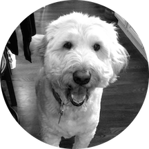
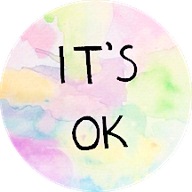
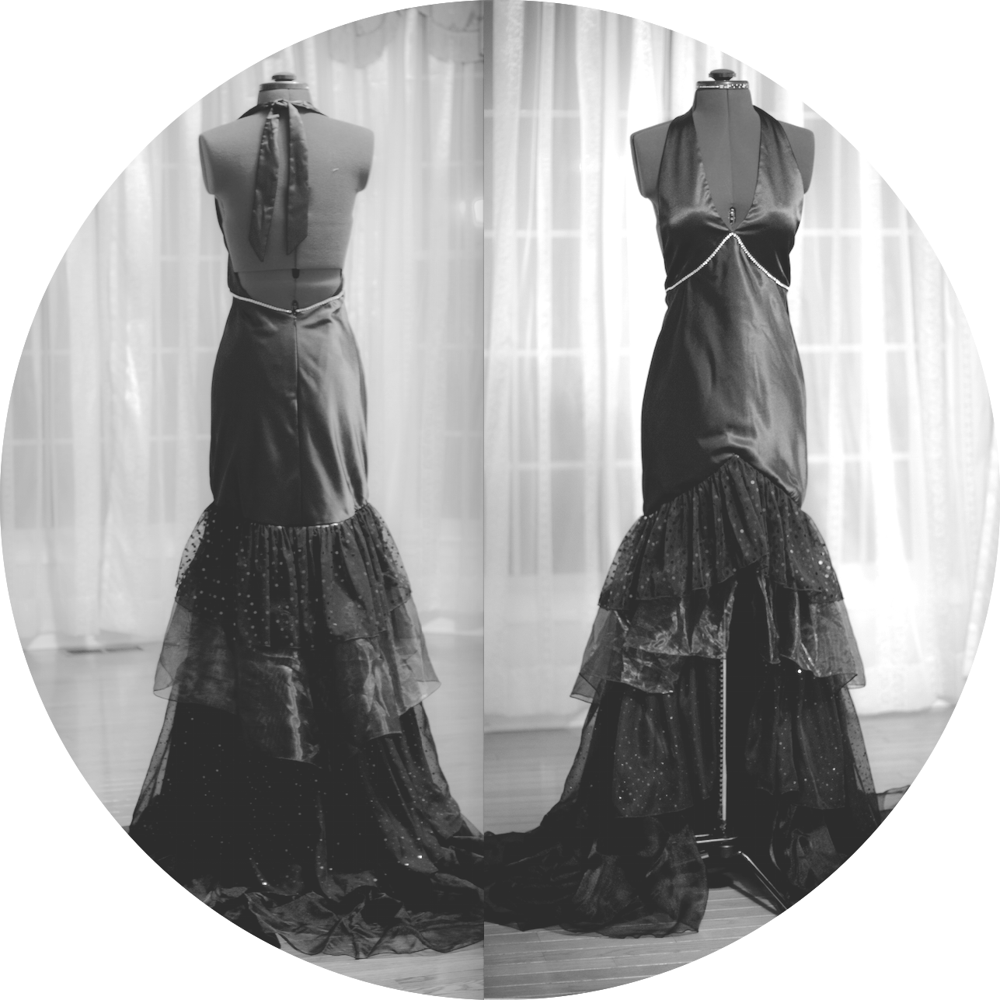

Why hello there!

My name is Annie Tang . I was born and raised in Holmdel, New Jersey. I am a current sophomore at Duke University, an aspiring data scientist, and a bourgeoning developer. I am an independent, self-driven worker, and I am constantly looking for ways to improve myself.
A few bits and bobs . . .



I have an absolute, unwavering love of dogs.
My dog, Gordo, and the volunteer work I do at Durham APS (Animal Protection Services) are very close to my heart.I'm a fashion design enthusiast.
In high school, I competed at the national level and won. I live by these two words: it's ok.